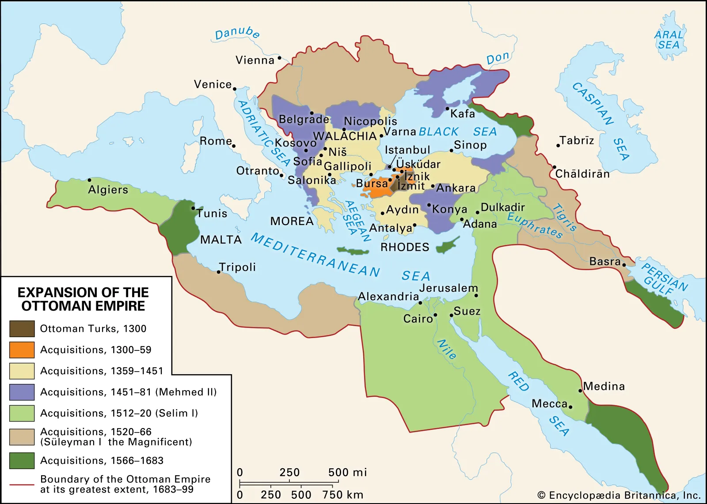
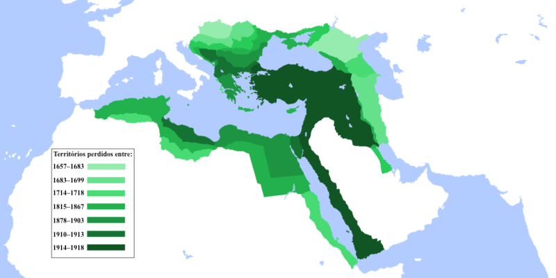
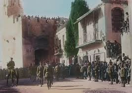
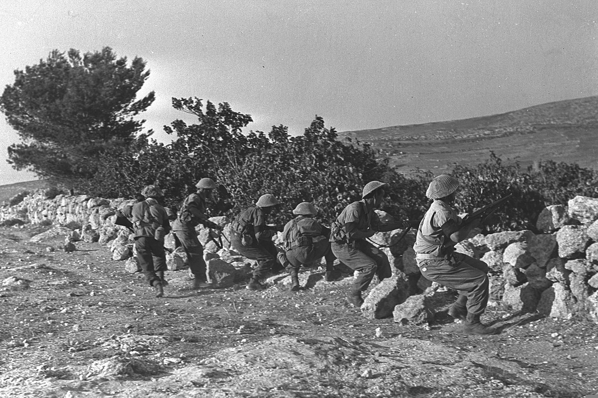
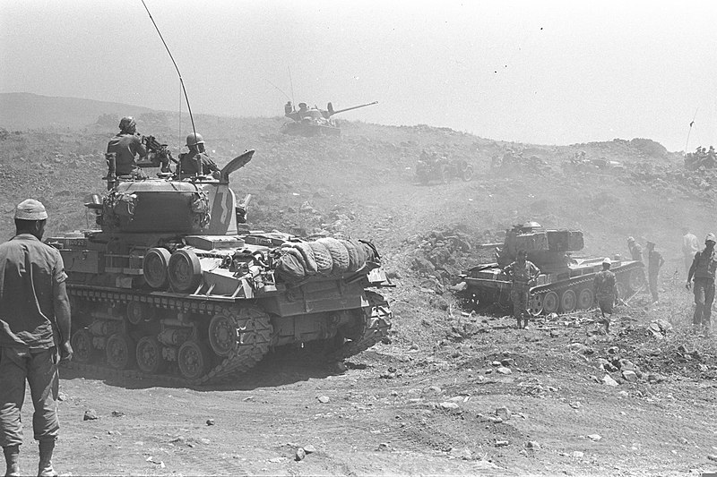
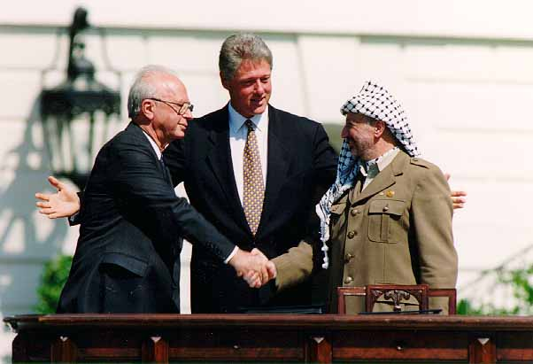
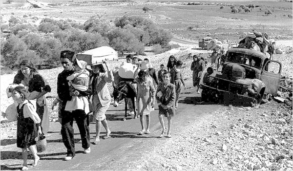
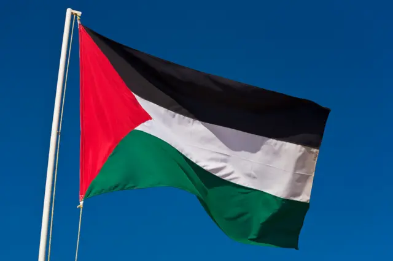

O Império Otomano no Oriente Médio: Um Legado duradouro
O Império Otomano foi uma das maiores e mais duradouras potências da história, exercendo
um domínio significativo sobre vastas regiões da Europa, Ásia e África, incluindo uma parte
substancial do Oriente Médio. Sua influência na região moldou culturalmente, politicamente e
economicamente muitas nações que conhecemos hoje.
A Extensão Otomana no Oriente Médio
No auge de seu poder, o Império Otomano controlava territórios que hoje correspondem a:
• Península Arábica: Grande parte da península, incluindo a atual Arábia Saudita, Iêmen
e partes do Iraque e da Jordânia.
• Levante: Síria, Líbano, Israel e territórios palestinos.
• Mesopotâmia: Corresponde aproximadamente ao Iraque atual.
• Egito: Por um período, o Egito foi uma província otomana crucial.
Mapa aproximado da extensão máxima do Império Otomano:

Legado e Impacto
O legado otomano no Oriente Médio é profundo e complexo:
• Religião e Cultura: O Islã sunita se tornou a religião dominante em muitas regiões sob
o domínio otomano, moldando as identidades culturais e as tradições locais. A
arquitetura otomana, com suas mesquitas e palácios magníficos, ainda é visível em
muitas cidades da região.
• Política: A estrutura administrativa otomana deixou marcas nas instituições políticas
de muitos países árabes. A divisão administrativa e as fronteiras estabelecidas pelos
otomanos influenciaram a organização política da região até os dias atuais.
• Economia: O comércio e a agricultura prosperaram sob o domínio otomano, com rotas
comerciais conectando o Oriente Médio à Europa e à Ásia. A produção de seda,
tapetes e outros produtos artesanais era famosa.
• Nacionalismo: A dominação otomana contribuiu para o surgimento de movimentos
nacionalistas árabes e curdos, que buscaram
a independência e a autodeterminação
A Queda do Império e suas Consequências
A Primeira Guerra Mundial marcou o fim do Império Otomano, que foi dividido em diversos
novos estados. A desintegração do império levou a um período de instabilidade e conflitos na
região, com a criação de novas fronteiras artificiais que nem sempre correspondiam às divisões
étnicas e religiosas.
O Oriente Médio Pós-Otomano
O Oriente Médio que conhecemos hoje é resultado de um longo processo histórico que inclui o
domínio otomano, a Primeira Guerra Mundial, a colonização europeia e a descolonização. O
legado otomano continua a influenciar a política, a cultura e a sociedade da região, mesmo
após mais de um século de sua queda.

O conflito árabe-israelense é um dos mais duradouros e complexos do mundo, envolvendo
questões históricas, políticas, territoriais e religiosas. Aqui está um resumo dos principais
aspectos:
1. Histórico
• Raízes Históricas: O conflito tem raízes no final do século XIX, com o surgimento do
sionismo, que buscava estabelecer um lar nacional para os judeus na Palestina, e o
nacionalismo árabe, que defendia a autodeterminação dos povos árabes na região.
• Mandato Britânico:Após a Primeira Guerra Mundial, a Palestina ficou sob controle
britânico, e a Declaração Balfour de 1917 prometeu apoio à criação de um lar nacional
judaico, aumentando as tensões entre árabes e judeus.

2. Partição de 1947 e Criação de Israel
• Plano de Partição da ONU:: Em 1947, a ONU propôs dividir a Palestina em estados
árabe e judeu. Enquanto os líderes judeus aceitaram o plano, os líderes árabes o
rejeitaram.
• Guerra de 1948:Após a declaração de independência de Israel em 14 de maio de
1948, a região foi invadida por países árabes, resultando na criação do Estado de Israel
e no deslocamento de centenas de milhares de palestinos, evento conhecido como
Nakba (catástrofe).

3. Conflitos Armados
• Guerra dos Seis Dias (1967):Israel ocupou a Cisjordânia, Gaza, Jerusalém Oriental e as
Colinas de Golã. Essa ocupação gerou um aumento das tensões e a construção de
assentamentos israelenses.
• Intifadas:Dois levantes palestinos, a Primeira Intifada (1987-1993) e a Segunda
Intifada (2000-2005), marcaram protestos populares contra a ocupação e a falta de
progresso nas negociações de paz.

4. Processos de Paz
• Acordos de Oslo (1993):Esses acordos entre Israel e a Organização para a Libertação
da Palestina (OLP) estabeleceram a Autoridade Palestina e um processo para a paz,
mas a implementação foi problemática.
• Soluções de Dois Estados:A ideia de criar um estado palestino ao lado de Israel é
amplamente apoiada internacionalmente, mas as negociações têm sido repletas de
obstáculos.

5. Questões Centrais
• Território e Fronteiras:Disputas sobre as fronteiras, especialmente em relação a
Jerusalém e os assentamentos israelenses na Cisjordânia.
• Refugiados Palestinos:A situação dos refugiados palestinos é uma questão central,
com milhões vivendo em campos de refugiados em países vizinhos e reivindicando o
direito de retorno.

6. Atuais Desafios
• Violência Contínua:Conflitos periódicos, como as guerras em Gaza, e ataques de
grupos armados complicam ainda mais as relações.
• Divisões Internas: A divisão entre facções palestinas, como Fatah e Hamas, também
complica o cenário político e a busca por um acordo.

VOLTAR